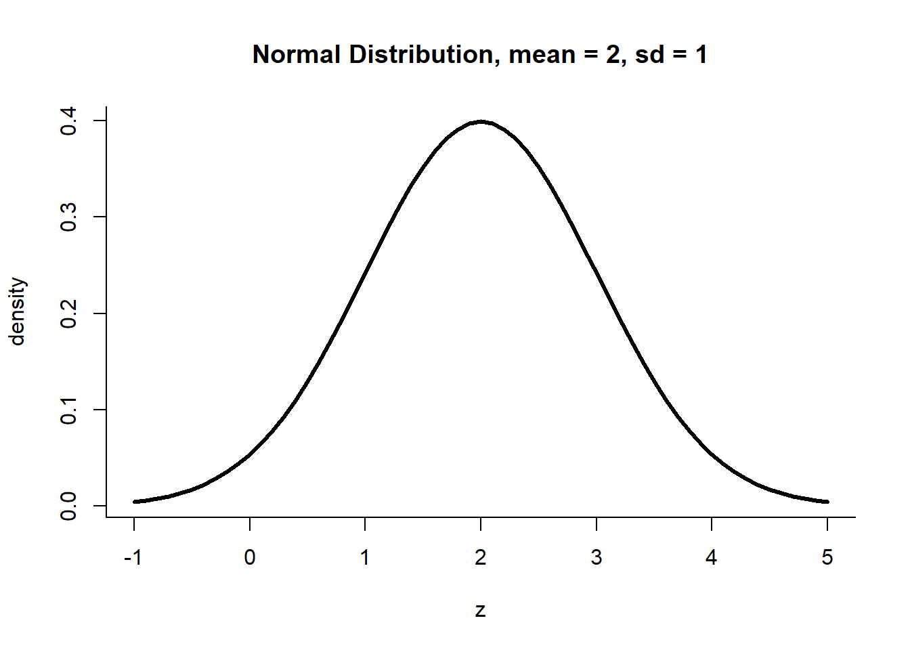
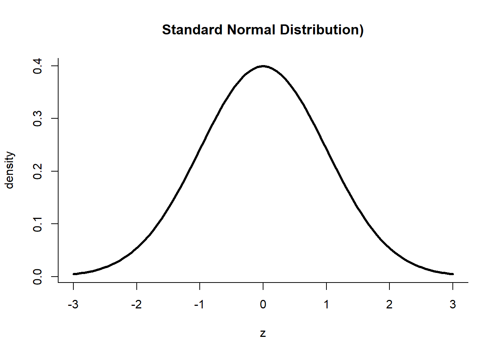

Unit 3 The Normal Distribution and the Central Limit Theorem
3.1 Population vs. Sample
Population - all the elements from a set of data
Sample - one or more observations taken from the population
A quantity taken for the entire population is known as a population parameter, while that taken for a sample is called a sample statistic.
Sampling Distribution
- “The sampling distribution of a statistic is a probability distribution based on a large number of samples of size \(n\) from a given population.”17
This means that…
- The sampling distribution is a probability distribution.
- From the population, many samples of the same size are taken and a statistic (e.g mean, proportion) is taken for each sample.
- Using the values of the statistic that were calculated from the samples, a distribution is then obtained.
Standard Error
- The measure of the variability of the sample means
- \(SE = \frac{\sigma}{\sqrt{n}}\), \(\sigma\) is the population standard deviation
3.2 The Normal Distribution
The normal distribution is the most common among all probability distributions, perhaps because it describes a lot of variables quite well. According to an introductory statistics book, “Many variables are nearly normal, but none are exactly normal. Thus the normal distribution, while not perfect for any single problem, is very useful for a variety of problems.”18
The normal distribution is bell-shaped. It is symmetric and unimodal; it has one peak and tapers off at both ends in exactly the same way. Below is an example of a normal distribution with a mean of 2 and a standard deviation of 1.

Two parameters are used to describe the normal distribution - mean \(\mu\) and standard deviation \(\sigma\). A mean of 0 and a standard deviation of 1 corresponds to the standard normal distribution which is shown below:

3.2.1 PDF of a Normal Distribution
The normal distribution is continuous, i.e. a normally distributed random variable can take on any value between \((-\infty, +\infty)\). The pdf for the normal distribution is:
\[f(x) = \frac{1}{\sqrt{2 \pi \sigma^2}}\exp{\left[-\frac{1}{2} \cdot \left( \frac{x - \mu}{\sigma}\right)^2\right]}\]
3.2.2 The Z-score
- measures how many standard deviations above or below the mean a data point is
Formula for the z-score:
\[z = \frac{x-\mu}{\sigma}\]
The above equation looks like the last part of the normal pdf. Substituting this expression for z yields:
\[f(z) = \frac{1}{\sqrt{2 \pi \sigma^2}}\exp{\left[-\frac{1}{2} \cdot z^2\right]}\]
This is the equation for the standard normal distribution.
These equations are rarely used to compute probabilities because various software have made these available through the use of functions. For example, the Excel function NORMDIST()19 gives the exact value of the pdf for any normal distribution specified by a mean and standard deviation. However, introducing these concepts is still important to justify the robustness of the statistical tools that will be discussed later on. Knowing these fundamental concepts allows one to confidently use and interpret the results of many different methods such as hypothesis testing, linear regression, etc.
3.3 The Empirical Rule
Another useful property of normally distributed data is given by the empirical rule. Given that the distribution of the data is bell-shaped, this rule states that:
- Approximately 68% of the data lie within 1 standard deviation from the mean
- Approximately 95% of the data, 2 standard deviations
- About 99.7% of the data, 3 standard deviations
Figure 3.1: The Empirical Rule
3.4 The Central Limit Theorem
3.4.1 Conditions for the CLT
The Central Limit Theorem (CLT) states that for a population with mean \(\mu\) and standard deviation \(\sigma\), taking sufficiently large random samples with replacement and computing sample means will yield a distribution of sample means (sampling distribution) that is approximately normal.20
The CLT holds true provided that the following conditions are met:
- Independence: The sampled observations must be independent.
- Sample size/skew: If the population is skewed, the sample size \(n\) must be greater than 3. If not, the population distribution must be normal.
Under this theorem, the parameters for the sampling distribution are \(mu\), the population mean, and \(SE = \frac{\sigma}{\sqrt{n}}\), the standard error. That is, \(\overline{X} \sim N(\text{mean} = \mu, \sigma = \text{SE})\).
3.4.2 Applying the CLT21
Suppose my iPod has 3,000 songs. I know that the distribution of lengths of these songs is right-skewed, and for this iPod, the mean length is 3.45 minutes and the standard deviation is 1.63 minutes.
I’m about to take a trip to visit my parents and the drive is 6 hours. I make a random playlist of 100 songs. What is the probability that my playlist lasts the entire drive?
Given:
- \(\mu\) = 3.45 minutes
- \(\sigma\) = 1.63 minutes
- 6 hours = 360 minutes
Find:
- probability that 100 randomly selected songs lasts 360 minutes, which is the same as
- probability that the average length of the 100 randomly selected songs is at least \(360/100 = 3.6\) minutes
- \(P(\overline{X} \geq 3.6)\)
According to the CLT:
\[ \overline{X} \sim N(\mu = 3.45, ~ \text{SE} = \frac{1.63}{\sqrt{100}} = 0.163) \]
\[Z = \frac{x - \mu}{\sigma} = \frac{3.6 - 3.45}{0.163} = 0.92\]
\[P(Z \geq 0.92) = 0.1788\]
3.5 Concluding Remark
This unit has introduced one of the most important theorems in statistics and in doing so, has inevitably scratched the surface of one of the most fundamental inferential methods - hypothesis testing. The next unit will more formally introduce the rudiments of hypothesis testing - from setting up hypotheses to selecting the appropriate confidence level. After establishing the fundamental definitions, applications and examples will be presented which will hopefully solidify the previous discussions. The normal distribution will be re-introduced and in the context of hypothesis testing, its ubiquity in the realm of inferential statistics will be more apparent.